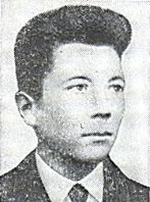

Полухин Иван Андреевич
Полухин Иван Андреевич родился 01 июля 1924 года в деревне Голендухино, Режевского района, Уральской (Свердловской) области, в крестьянской семье.
1931–1939 годах обучался в сельской школе. Закончил 7 классов.
1940 год работает в колхозе "Пролетарка".
1942 год призван в Красную Армию в Ржевском районе.
1942-1943 годы Полухин Иван Андреевич является участником боевых действиях на Юго-Западном фронте.
15 января 1943 года В составе группы из 13 человек во главе с командиром роты И. С. Ликуновым ворвался в посёлок Донской, захватил 3 дома и удерживал их в течение дня. Погиб в бою. Хутор Красновка, Тарасовский район, Ростовская область
Памятная плита на площади Побед в Реже
Герой Советского Союза Полухин Иван Андреевич